C++言語の学習に役立つ書籍
C++言語の学習に役立つ書籍を、目的別に紹介します。初心者向けの入門書から、C++プログラマーなら手元に置いておきたい名著まで揃えています。
C++言語をより丁寧に学びたい
本を読んで、もう少しC++言語を丁寧に学びたい人たち向けにおすすめです。プログラミングの初歩についてじっくり学び、より深い理解を得てから、レベルの高いプログラミングを行ってみたい人におすすめの書籍です。
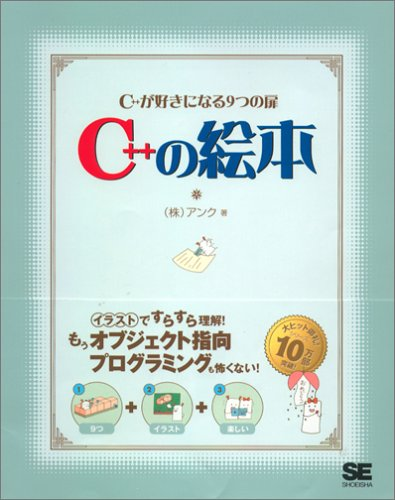
C++の絵本
「C絵本」のC++版です。マイクロソフトのVisualC++を使用している学習者にはぴったりです。C言語は知っているけれど、C++は知らない人にはうってつけです。
Amazonで見る →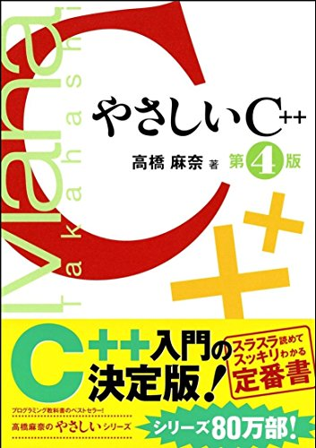
やさしいC++
ベストセラーの「やさしい」シリーズのC++版です。内容を理解するにはある程度C言語について理解している必要がありますが、様々なトピックに触れられた内容の豊かな入門書です。
Amazonで見る →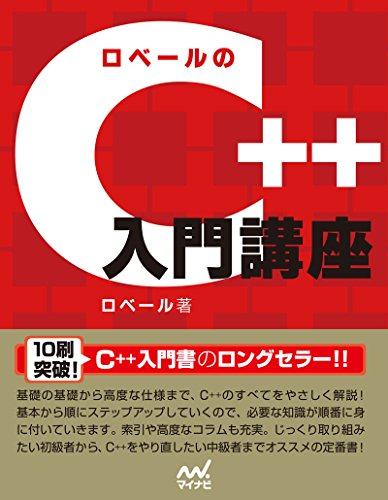
ロベールのC++入門講座
一度簡単な本でC++を学んだり、内容がうろ覚えだったりする人にはうってつけの本です。C++の言語仕様はほぼ網羅されているので、本格的にC++を学びたいプログラマーは読んでおきたい一冊です。
Amazonで見る →手元に置いておきたい専門書
C++プログラマーならば、ぜひとも手元に置いておきたい専門書です。
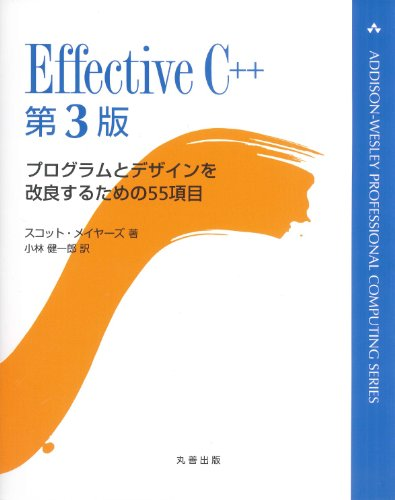
Effective C++
1991年の初版以来、C++プログラマーに支持されている名著です。すでにC++についてある程度知っているプログラマーが対象で、C++の効率的な使い方を多数紹介しています。
Amazonで見る →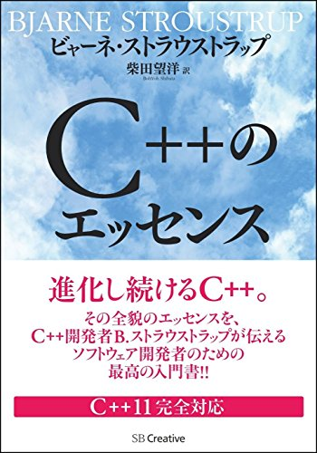
C++のエッセンス
C++の開発者ストラウストラップが、最新のC++の概要とポイントをコンパクトにまとめた解説書です。サンプルコードの豊富さがこの本の魅力で、ここだけは押さえておきたいというC++の重要事項を、具体的な例題(コード)を通してわかりやすく解説されています。C++11にも対応しており、最新環境でのC++のプログラミングにも対応しています。
Amazonで見る →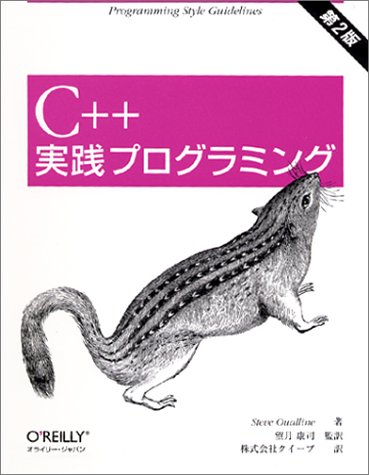
C++実践プログラミング
1996年の第1版発行以来、長らく読み続けられているC++の書籍の決定版で、プログラマーに愛されている古典的名著と言ってもよいでしょう。 C++言語のみならず、コメント、デバッグ、設計などといったような、C++プログラマーなら身につけておきたい様々な関連情報も網羅されています。
Amazonで見る →最先端のC++言語への対応
C++言語は常に進歩しています。最先端である、C++11/C++14に関して学習したいのなら、こちらの専門書がぴったりです。
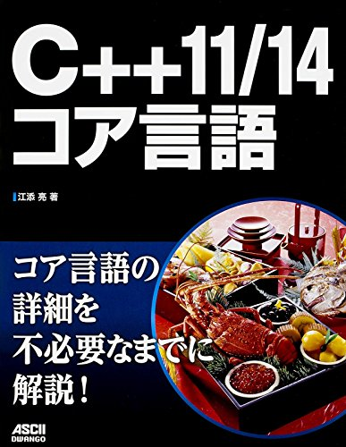
C++11/14 コア言語
他の解説書ではわからない、C++コア言語を詳細まで説明した専門書です。C++11/14に関する書籍は、現在ほとんどが外国出版社の翻訳のものが多いのですが、本書は珍しく日本人によって書かれた書籍です。すでに、C++をマスターしており、最新の言語仕様に触れたいという人にはぴったりの一冊です。
Amazonで見る →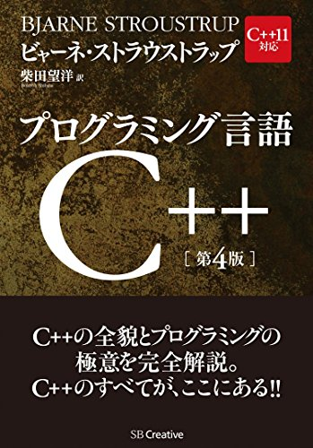
プログラミング言語C++
C++の開発者ストラウストラップによって書かれた、C++のバイブルの翻訳版です。C++11の全貌を解説しており、C++を使いこなす上では、避けては通れない一冊でしょう。翻訳は、CやC++に関する数々の名著の著者である柴田望洋氏であることも、安心感につながります。 C++を徹底的に使いこなしたいプログラマーなら、手元に置いておきたい一冊です。
Amazonで見る →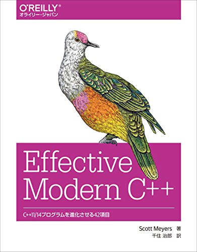
Effective Modern C++ ―C++11/14プログラムを進化させる42項目
歴史的名著、「Modern C++」のC++11/C++14対応です。C++をすみずみまで知り尽くした著者が、効果的かつ堅牢、移植性の高い優れたC++プログラムを書くノウハウを42項目にまとめています。 C++を極めたい、C++言語の能力を極限まで引き出したいプログラマーなら、ぜひとも手元に置いておきたい一冊です。
Amazonで見る →オブジェクト指向を制するために
C++言語の一番のポイントは、何と言ってもオブジェクト指向です。そのため、オブジェクト指向にターゲットを絞った著書がいくつか出版されています。ここでは、そのうち主要なものを紹介しておきます。
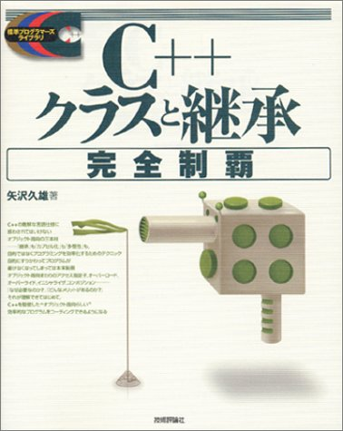
C++クラスと継承完全制覇
オブジェクト指向の理解をメインとしたC++の解説書です。「継承」、「カプセル化」、「多態性」などといった、大事だけれど初心者にとってはわかりづらい概念に的を絞り、わかりやすい解説をしています。2002年に出版され古い本ですが、内容は古びていません。
Amazonで見る →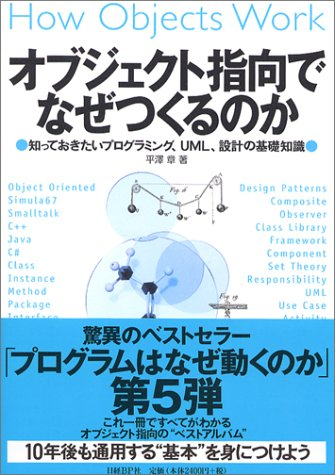
オブジェクト指向でなぜつくるのか
C++言語という前に、「そもそも、オブジェクト指向というものがよくわからない」とか、「なんでわざわざオブジェクト指向なんていうものが必要なのか」と感じている人が読んでみると良いでしょう。言語を学びながら、同時に純粋にオブジェクト指向の考え方をしっかり身に着けるには最適です。
Amazonで見る →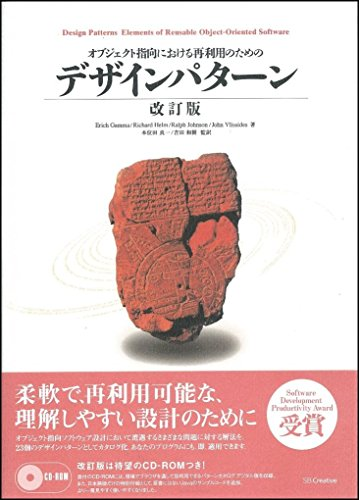
オブジェクト指向における再利用のためのデザインパターン
オブジェクト指向によるGoFのデザインパターンによる解説書です。使用している言語もC++ではなく、内容も高度で難しいものですが、デザインパターンに関して解説している数少ない本でもあり、古典的な名著でもあります。
Amazonで見る →実用的なプログラムを作るために
C++言語の基本を学んだら、より実用的なプログラムが作りたくなるものです。そこで、C++言語を使ったアプリケーション作成の実践を学ぶに適した書籍を紹介しましょう。
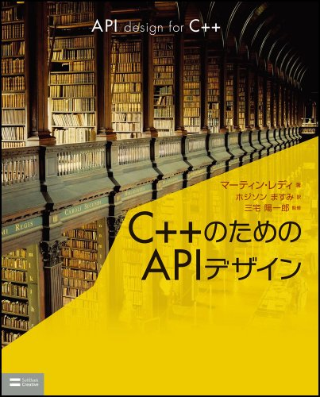
C++のためのAPIデザイン
C++の言語の利用のみにとどまらず、ドキュメント作成やテスト、パフォーマンスといった、C++を使った本格的なソフト開発にまで踏み込んだ書籍です。C++の学習を通して、優れたAPIの特徴を学ぶことも可能です。
Amazonで見る →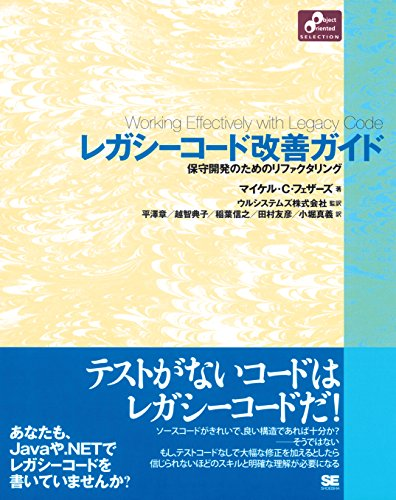
レガシーコード改善ガイド
システム保守の現場でありがちな、構造が複雑で理解できないようなコード（レガシーコード）に対する分析手法・対処手法について解説してあります。Java、C、C++でサンプルを記述していますが、記載されているテクニックは言語依存するものではないため、様々な言語でもその考え方は応用可能です。
Amazonで見る →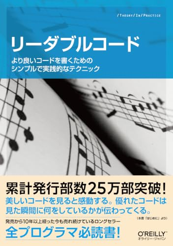
リーダブルコード ―より良いコードを書くためのシンプルで実践的なテクニック
C++に限らず、美しく読みやすいプログラミングを行うために必要な知識を身につけるための本です。名前の付け方、コメントの書き方など、プログラマーなら心得ておきたい内容について書かれています。
Amazonで見る →手元に置いておきたい資料
C++プログラマーが、手元に置いておきたい資料。
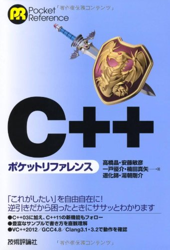
C++ ポケットリファレンス
逆引き形式で目的からすぐ探せる上に、サンプルコードが豊富なことで有名なC++言語のリファレンスです。C++プログラマなら、ぜひ手元に置いておきたい一冊です。STLに関する資料も豊富です。
Amazonで見る →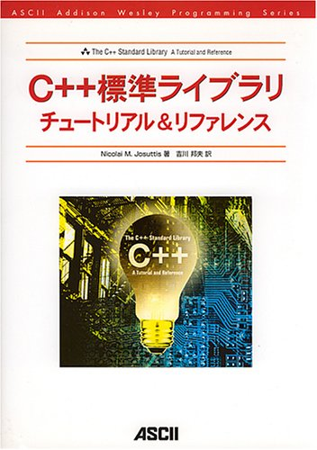
C++標準ライブラリチュートリアル＆リファレンス
C++プログラマーに必要な標準ライブラリの活用法を、さまざまなコード例と共に解説しています。STLなどを使いこなしたいと思っているプログラマーにはうってつけの一冊といえます。
Amazonで見る →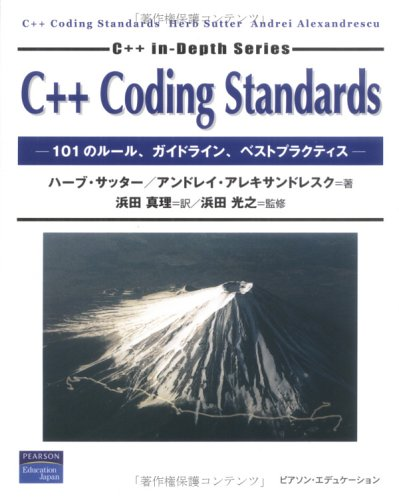
C++ Coding Standards
C++で良いプログラムを書くための方法が101種類のルールに分類して紹介しています。C++プログラマーなら、手元に置いて、折に触れて読むようにするとよいでしょう。
Amazonで見る →特定の環境下のプログラミング
アプリケーションを作るときは、なんらかのプラットフォームに依存したものになります。linuxやwindows、さらには組み込みプログラミングといった、プラットフォームに密接に関連したプログラミングのための著作を紹介します。
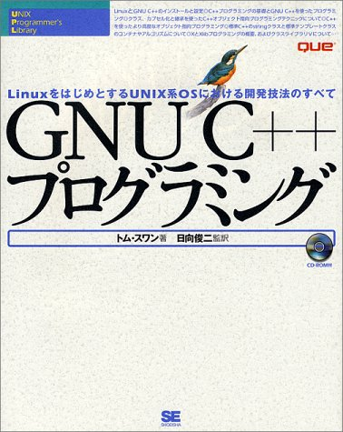
GNU C++プログラミング
LinuxをはじめとするUNIX系OSでのC++プログラミング開発について説明しています。、X Window Systemプログラミングの基礎、移植性の高いオブジェクト指向クラスライブラリVの使い方などといった、さまざまなテクニックを紹介しています。
Amazonで見る →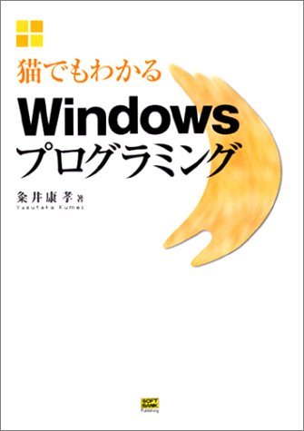
猫でもわかるWindowsプログラミング
有名な「猫でもわかる」シリーズの、Windowsプログラミング版です。WindowsアプリケーションのしくみとWin32 APIを使ったプログラミングをわかりやすく解説しています。ウィンドウズアプリの作成には、C++の理解が必須です。
Amazonで見る →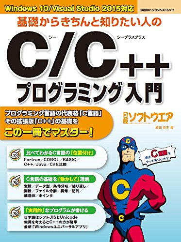
基礎からきちんと知りたい人のC/C++プログラミング入門
Windows 10でC/C++に入門するならぴったりの一冊です。Visual Studio/GCC/BCCを使った「標準C」の基礎解説もさることながら、Visual StudioのC++の機能を生かしたUnicode/MBCS両対応のプログラミング、GUI(Graphical User Interface)で簡単操作ができる「ユニバーサルアプリ」の開発、boostや大容量メモリーを使った数値計算といった、この本でこそ学べる知識がいっぱいです。
Amazonで見る →他の言語も学んでみましょう
C++言語を習得したら、関連する別の言語にもチャレンジしてみましょう。
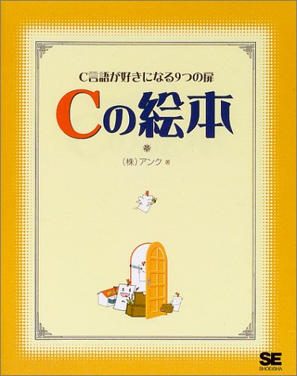
Cの絵本
翔泳社の「○○の絵本」シリーズのC言語版です。C++言語のしっかりした理解には、C言語の知識が欠かせません。C++言語はC言語の上位互換の言語であることから、まずはこの本でじっくり足場を固めてから、C++言語にチャレンジしてみましょう。
Amazonで見る →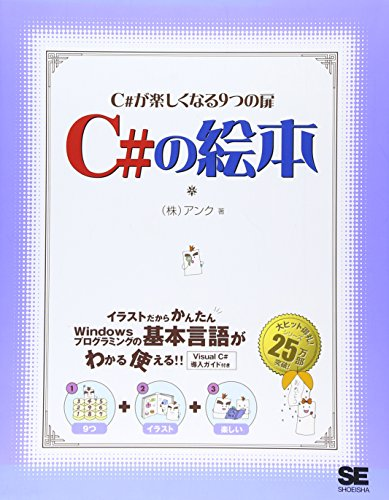
C#の絵本
C#は、マイクロソフトが独自に開発したオブジェクト指向言語で、C/C++言語やJavaなどの影響を受けつつ、独自の進化を遂げた言語です。現在、マイクロソフトのプログラミング言語の主流となっている言語で、C++の次のステップとして学びやすい言語です。
Amazonで見る →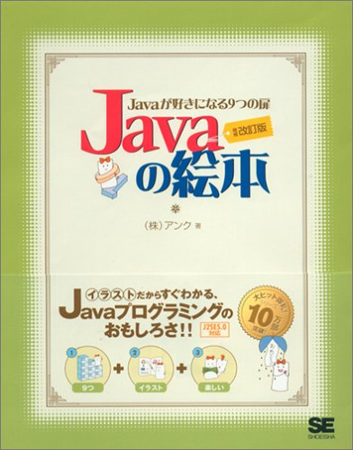
Javaの絵本
Java 言語も、C/C++言語に文法が似ている言語のひとつで、Androidや、各種のウェブアプリのように様々な応用範囲がある、現在使用されている主要なプログラミング言語の一つです。C++言語の知識がなくても十分に学ぶことができますが、両方をよく知り、上手に使い分けられるプログラマーになることが理想と言えるでしょう。
Amazonで見る →